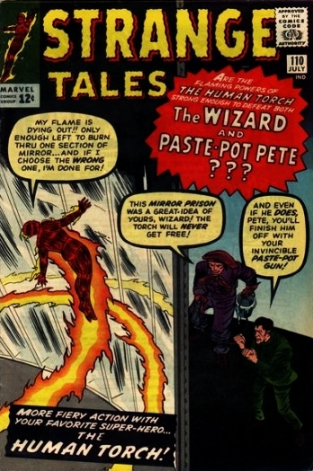
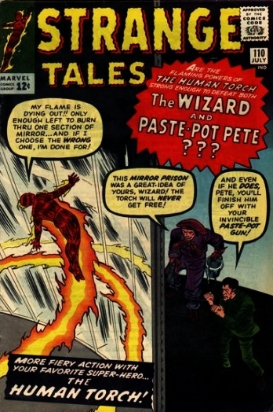

The Human Torch Vs. the Wizard and Paste-Pot Pete!: After a training session the Human Torch goes over his scrap book of past adventures, and recalls his previous battles against the Wizard and Paste Pot Pete, wondering what his old foes are up to today. Coincidentally enough, at that very moment Paste Pot Pete is busy breaking the Wizard out of prison so that the two may conspire on how to defeat their mutual foe.
Using the Wizard's suit that mimics the Human Torch's powers, the two begin to commit crimes that would cause the press to accuse the Human Torch of being a spy. However, when the Torch sets a trap to lure the two crooks to try and rob one of the world's richest men, the Torch himself gets captured and placed into a giant hall of mirrors by his foes. The Torch uses his flame powers to break free and manages to capture the two crooks and turn them over to the police.
Silent Stranger: A quiet new worker at the plant turns out to be a friendly alien who finds mechanical work easy to learn after walking through space.
We Search the Stars!: A space expedition discovers what they believe is a savage human-like species and flee, not suspecting that they are an advanced psychic race able to meet all their needs through thought.
Dr. Strange Master of Black Magic!: A man tormented by nightmares comes to Dr. Strange to seek aid. Dr. Strange promises to help. He travels in spirit form to his old master who lives in a remote mountain temple in Asia. The master tells Strange to depend on his magic amulet if danger threatens.
Back in his mortal form Strange visits the man he has promised to help. When the man falls asleep Dr. Strange enters his dream in spiritual form. Inside the dream Strange is met by a figure bound in chains who presents himself as Mr. Crang, trapped by a character called Nightmare!